Celebración Navideña del Politécnico MIR
Aquí encontrarás las imágenes oficiales de la Navidad MIR. ¡Un espacio dedicado para recordar los mejores momentos!
📸 Galería
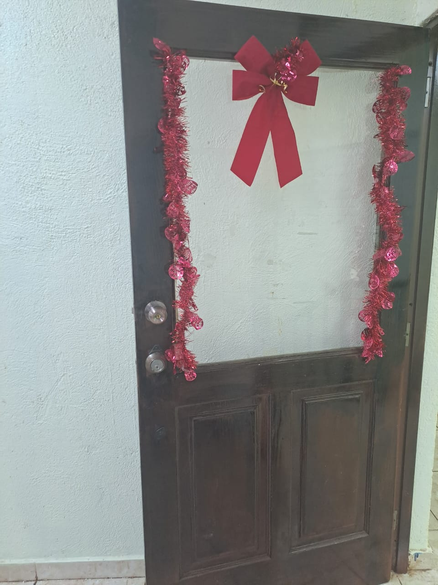
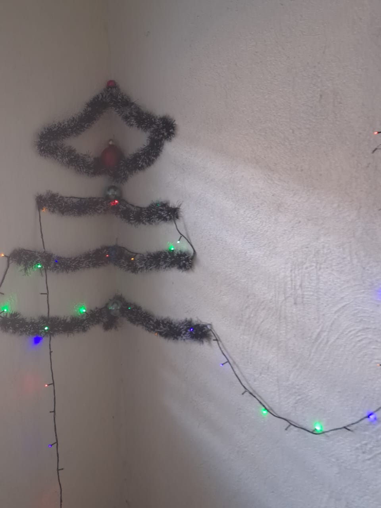
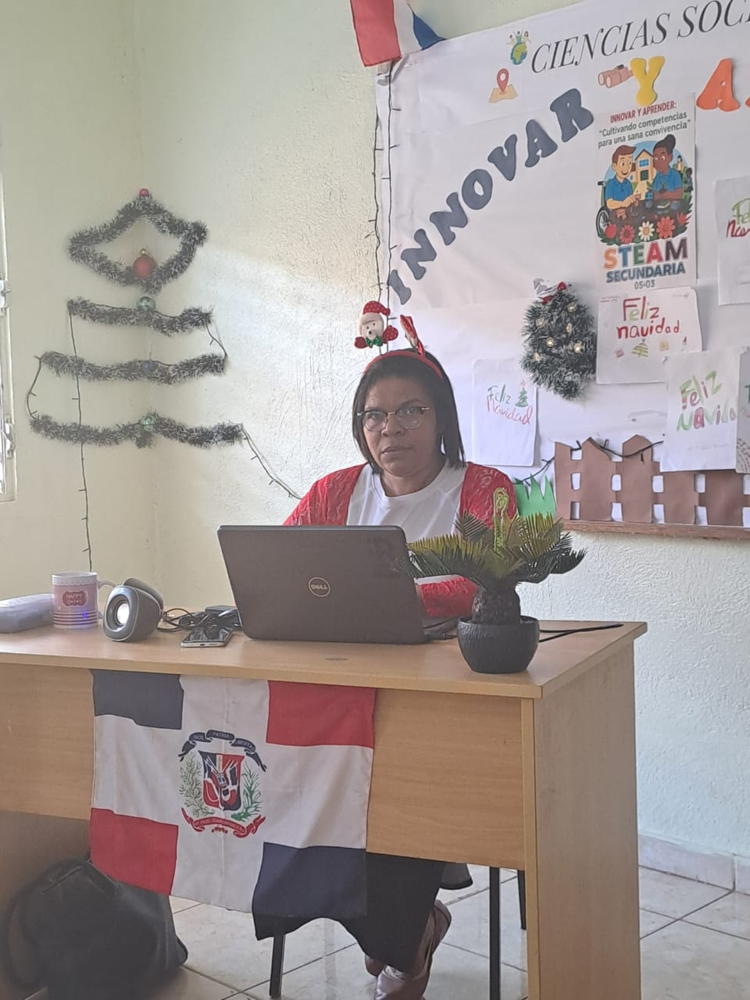
Politécnico Fundación MIR Max Simón
Edición Digital 2025: Innovación y Liderazgo
La Voz del Politécnico Fundación MIR Max Simón
Presidente del Área Técnica: Jery Caba
Secretario y Administrador Web: Ángel Aneudy
Diseñador Principal & Director de la Página:
Samuel Ernesto Rosario Guerrero
Correo Electrónico: los.muchachones.studios@gmail.com
Número: Próximamente
Este periódico digital fue diseñado gracias al esfuerzo colectivo y el compromiso del área técnica del Politécnico Fundación MIR Max Simón.
¡Les damos la más cordial bienvenida a "El Heraldo Técnico"! Este espacio digital nace con el propósito de informar, conectar y celebrar los logros de todas las áreas técnicas del Politécnico Fundación MIR Max Simón.
Aquí encontrarás las últimas noticias, proyectos innovadores y eventos destacados. Navega usando los botones superiores para explorar el increíble trabajo que realizan nuestros compañeros y docentes en Informática, Hotelería, Gastronomía y más. ¡Sumérgete en el mundo del saber técnico!
Con gran orgullo, anunciamos el lanzamiento oficial de una innovadora plataforma web interactiva, desarrollada íntegramente por nuestros talentosos estudiantes de 6to año del área de Informática. Esta solución digital está diseñada para optimizar la gestión y selección de los 26 horarios disponibles para los niveles de 1ro a 6to de bachillerato.
La plataforma ofrece una interfaz intuitiva que permite a la comunidad educativa navegar, consultar y administrar eficientemente los diferentes esquemas horarios.
¡Escanea para acceder!

Acceso directo a la Web App
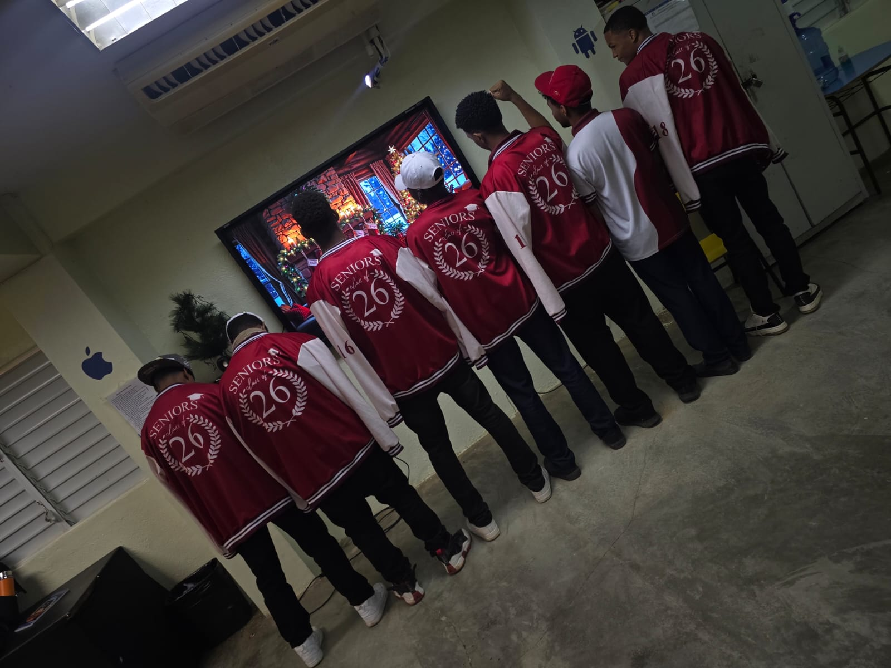
El área de Hotelería ha anunciado que estarán encabezando una importante actividad en colaboración con el departamento de Gastronomía. Este evento, diseñado para demostrar la excelencia en el servicio y el arte culinario, se llevará a cabo próximamente en las instalaciones de nuestro Politécnico Fundación MIR Max Simón.
Los estudiantes de Hotelería se encargarán de todo el protocolo, montaje y servicio de mesa, aplicando los estándares internacionales aprendidos en clase, mientras que sus compañeros de Gastronomía elaborarán el menú. Esta sinergia entre áreas técnicas promete ser una experiencia inolvidable.
Como es tradición en nuestro Politécnico, todos los años en el mes de diciembre se celebra una gran despedida para dar inicio a las vacaciones de Navidad, cuyo eje central es la cocina de platos típicos dominicanos, entre los que destaca nuestro delicioso Sancocho.
Los estudiantes de 6to de Gastronomía son los encargados principales de organizar y llevar a cabo esta actividad culinaria, preparando el festín bajo la supervisión experta de su maestro y Chef Aníbal.
Este evento no solo celebra la época festiva, sino que también sirve como una importante práctica profesional, demostrando las habilidades adquiridas en la elaboración de la gastronomía nacional a gran escala.
Hace unas semanas, los estudiantes de Agropecuaria, bajo la guía del maestro Rodolfo, se embarcaron en un ambicioso proyecto de siembra. La iniciativa consistió en la excavación de un hoyo de unos impresionantes 16 pies de profundidad destinado a la siembra de guineos.
Este método busca optimizar el uso del suelo y los nutrientes. Los estudiantes aportaron cepas de plátano y una gran cantidad de residuos orgánicos, que servirán como fertilizante natural de alta calidad. Esta técnica promueve el reciclaje de materia orgánica y asegura alimentos más saludables.
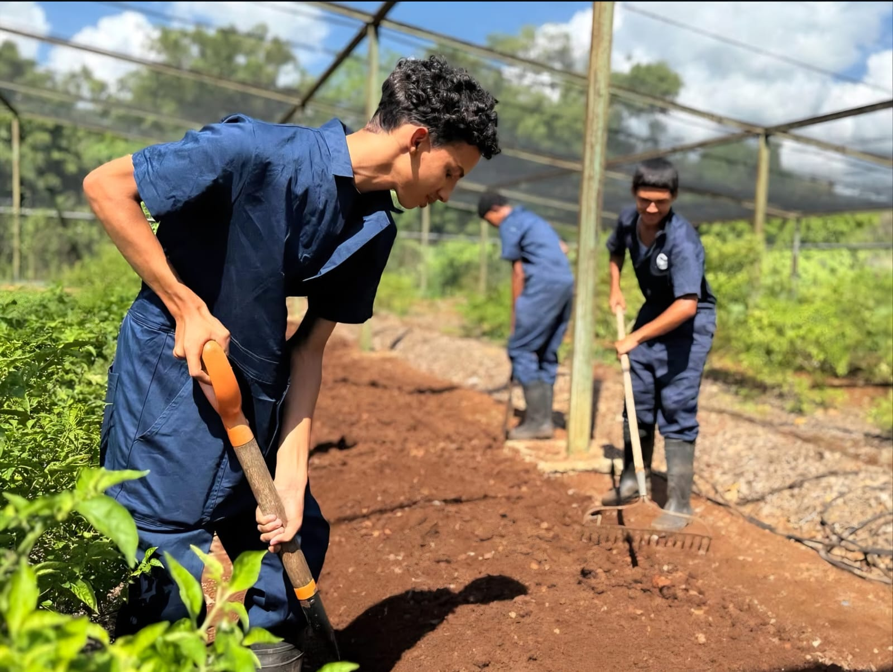
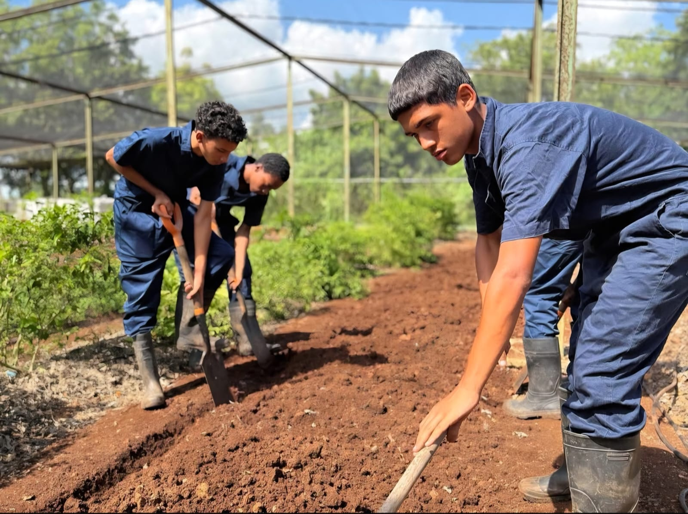
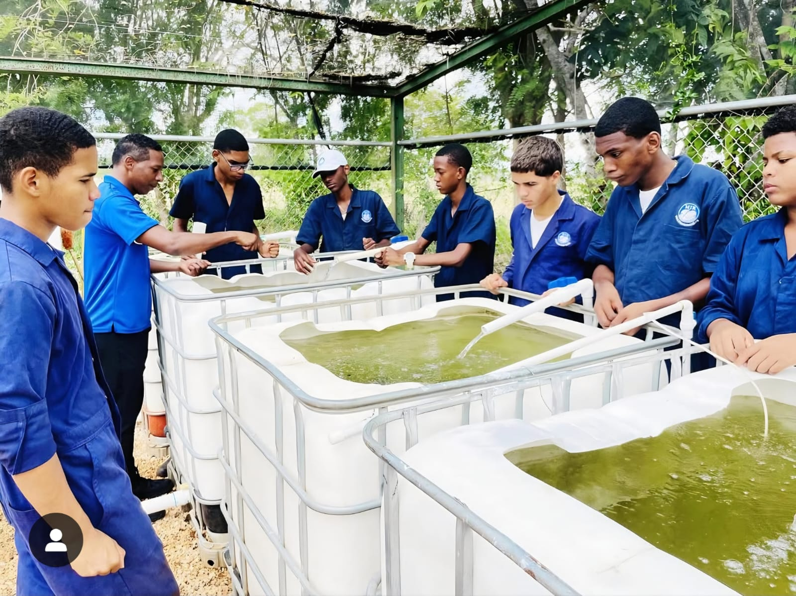
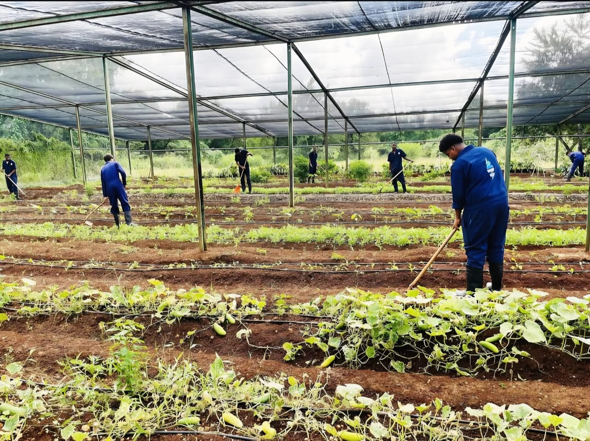
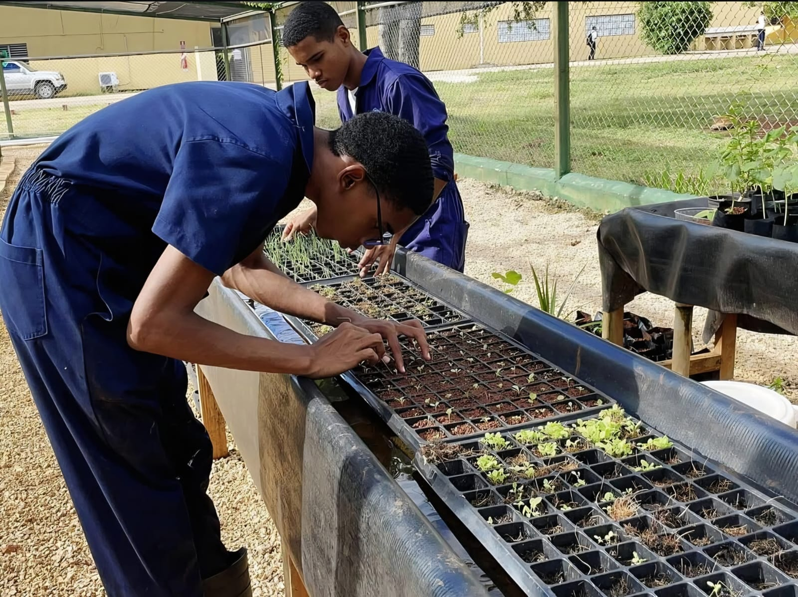


Proceso de Excavación y Preparación
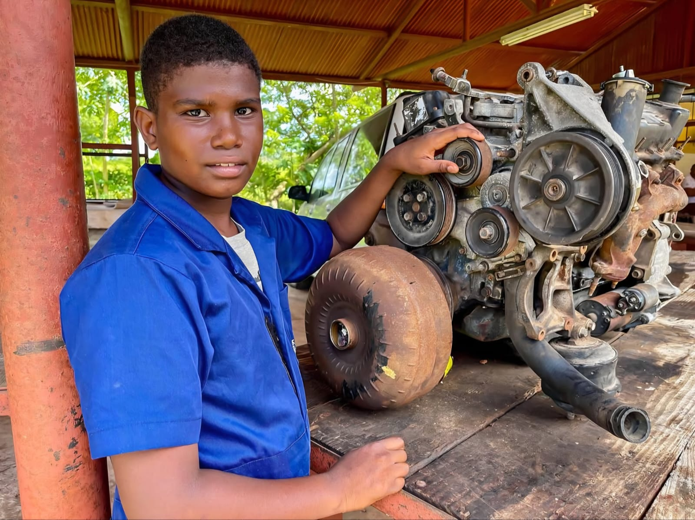
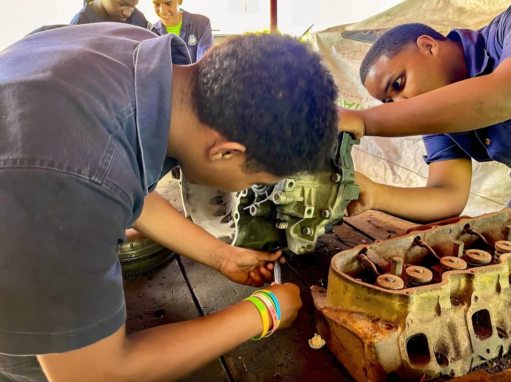
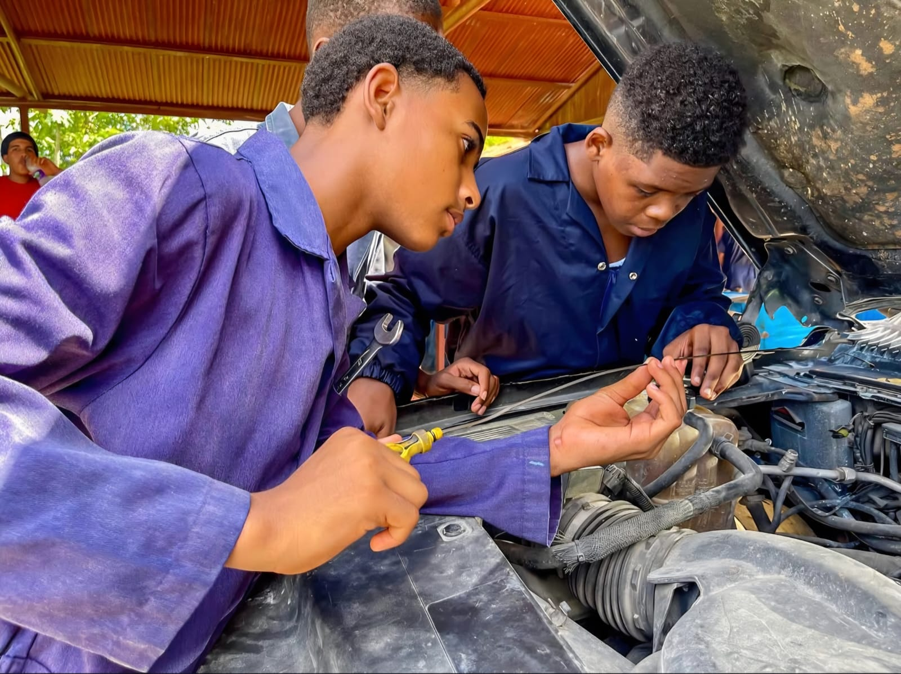
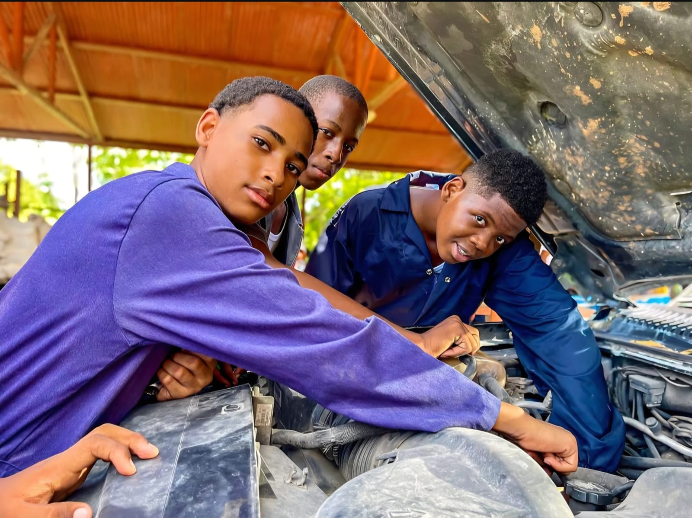


Los estudiantes del área de Mecánica Automotriz recibieron una instrucción práctica intensiva sobre la reparación y el encendido de un motor de camioneta. Esta actividad fundamental se llevó a cabo bajo la dirección del Maestro Daniel, el maestro oficial del área de Mecánica.
La clase se centró en el diagnóstico de fallas, el proceso de desmontaje de componentes clave y, finalmente, el reensamblaje y la puesta en marcha del motor. Esta experiencia en un vehículo real proporciona a los alumnos habilidades esenciales y conocimientos directos que complementan su formación técnica.
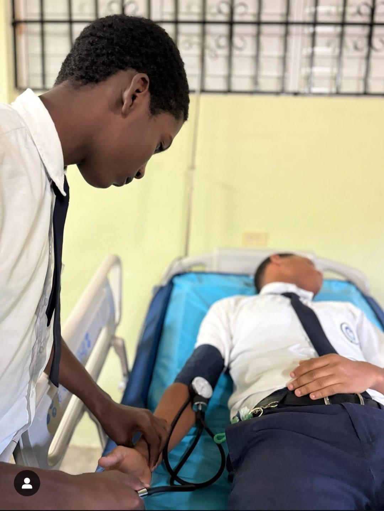
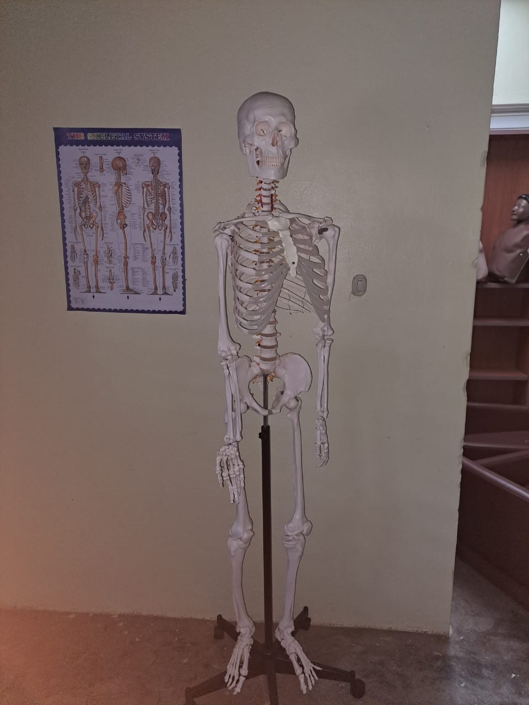

El Politécnico Fundación MIR Max Simón continúa a la vanguardia en educación técnica. Hace apenas dos semanas, nuestra institución recibió un importante lote de nuevos equipos médicos destinados al laboratorio de Enfermería. Esta adquisición representa un salto de calidad significativo para las prácticas clínicas de los estudiantes.
Entre los nuevos insumos se destacan simuladores de pacientes de última generación, instrumental quirúrgico renovado y dispositivos de monitoreo digital. "Contar con esta tecnología nos permite simular escenarios reales de emergencia", expresaron docentes del área.
Esta sección de reportajes y proyectos fue dirigida por la Maestra Viviana Aponte para el área de Lengua Española.
Cada día más dominicanos son víctimas de ataques digitales que vulneran su privacidad y sus finanzas. En una madrugada cualquiera, los servidores de una empresa financiera fueron atacados...
El uso del internet en el país ha crecido, y con él, los riesgos. El cibercrimen consiste en delitos cometidos a través de redes, como el robo de contraseñas o estafas...
En los últimos años, hemos experimentado un crecimiento acelerado en el uso de tecnologías. Sin embargo, este avance ha traído un aumento alarmante del cibercrimen...
El cibercrimen es una de las amenazas más grandes de la era digital. Abarca actividades ilegales como robos de datos y fraudes financieros...
Los talentosos alumnos de 4to de Secundaria han puesto el listón muy alto con la presentación de sus innovadores Instructivos Digitales, una actividad que sirvió como brillante cierre de la primera secuencia didáctica del año escolar. Esta exhibición, realizada a finales de octubre, transformó la teoría en práctica al desafiar a los estudiantes a convertirse en expertos y comunicadores digitales.
Creatividad y Competencia Comunicativa en Pleno Esplendor. El proyecto, denominado "¡De Alumnos para el Mundo Digital!", destacó por la gran creatividad en el uso de formatos y el lenguaje fresco y accesible de los jóvenes.
La iniciativa ha generado gran entusiasmo en la comunidad educativa, consolidando a nuestros alumnos de 4to como futuros innovadores y líderes en la alfabetización digital, dejando claro que el aprendizaje en el aula tiene un impacto directo y práctico en el mundo conectado de hoy.


Espacio destinado para agregar información nueva, análisis, resúmenes, trabajos y recursos didácticos relacionados con Lengua Española. Ideal para artículos, guías y PDFs.
➕ Aquí puedes añadir textos, recursos, actividades o enlaces a documentos que hagan falta compartir con estudiantes y docentes.
Sección preparada para integrar una nueva página web o módulos interactivos de Física. Aquí puedes enlazar simuladores, PDFs o incrustar páginas externas.
Esta área reúne información, galería y el juego PI Snake. Útil para documentar el evento, compartir ganadores y mostrar fotos y evidencias.
Aquí puedes agregar explicaciones, datos curiosos, historia del número π, actividades de memorización y links a recursos educativos.
Espacios listos para agregar imágenes del evento o trabajos escolares.
Haz click para ir a la pantalla del juego o incrusta el juego directamente si lo deseas.
Haz click para ir a la pantalla del juego.
Viernes 7 de noviembre
El Politécnico Fundación MIR Max Simón vibró con el espectacular lanzamiento de la promoción 2025-2026, bautizada con el nombre de ASTHERM. Fue un evento inolvidable donde todos los estudiantes de sexto grado unieron fuerzas.
Coreografía Grupal
Presentación en Tarima
Show de Apertura